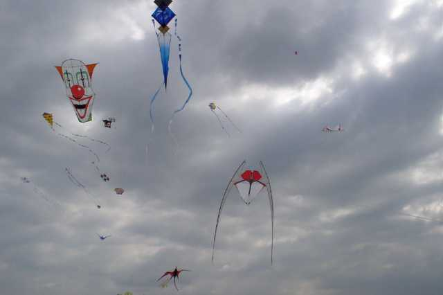
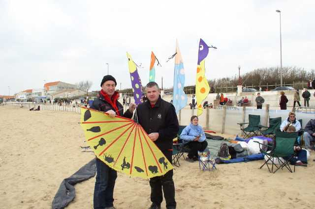
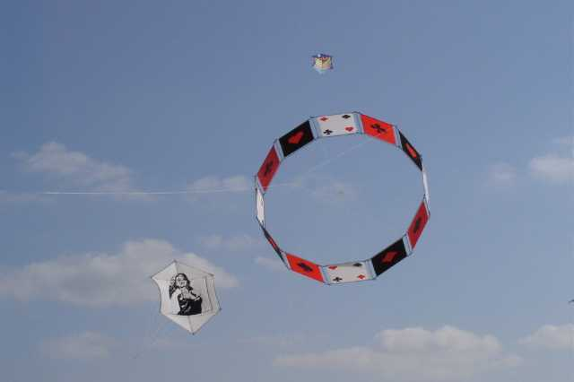
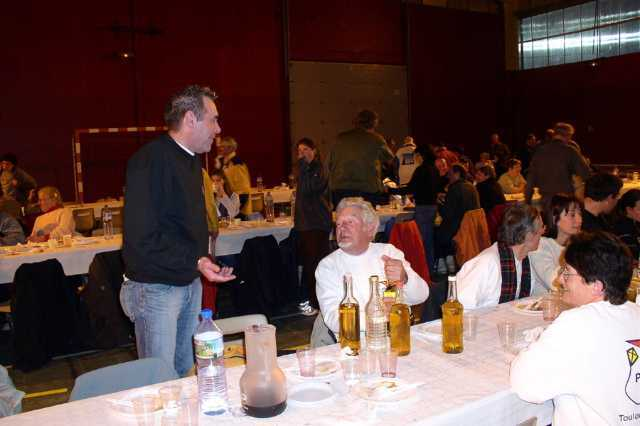
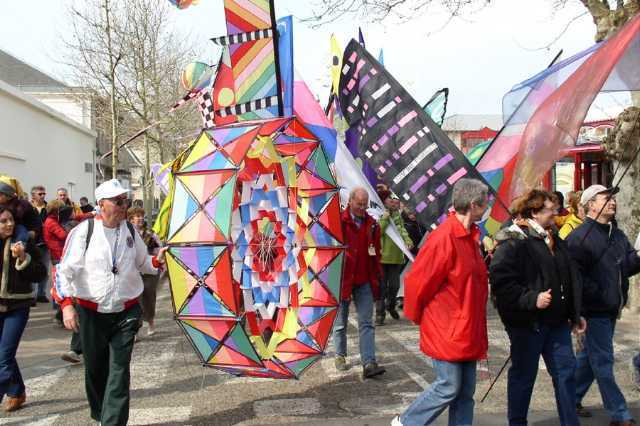
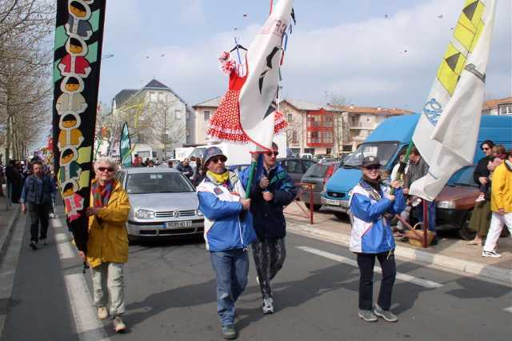
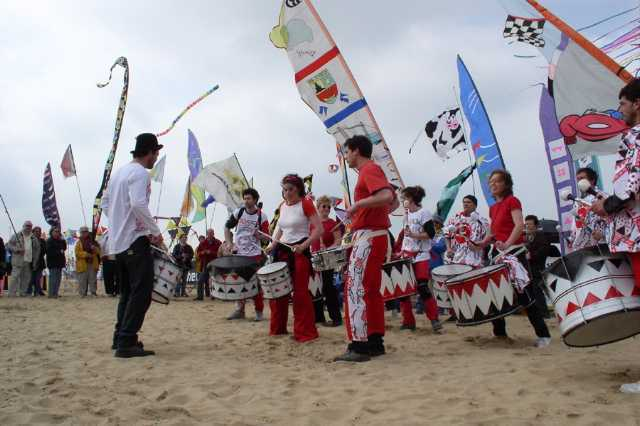
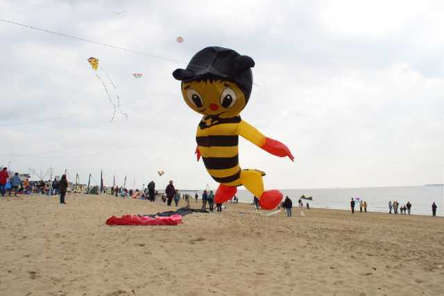

Chatelaillon 2004


Pour un bon week-end, ça a été un bon week-end. Du vent, assez fort à moyen, pas de pluie, pas mal de soleil. D'accord, un peu frais surtout le samedi, fallait se remuer...
Le samedi, arrivée, accueil souriant de Madeleine, les cerfs-volistes plantent leur tente petit à petit. Les terrains sont grands, pas de problème. Le festival commence à 14h00, mais le matin, il y a déjà du monde en l'air, et pas qu'un peu ! Les places de stationnement pour cerfs-volistes se transforment peu à peu en terrain pour camping-cars, et les pots se répondront de l'un à l'autre tout le week-end, pour tous les prétextes : l'anniversaire de François, l'apéro, le départ, le retour, l'inauguration d'un cerf-volant, pour tout, pour rien, difficile d'y échapper (mais qui a essayé ?).


L'après midi, vol libre, combat de rokkaku, concours sur le thème "l'Espagne", avec de chouettes créations : un éventail espagnol et illustré, le torero rouge de Thérèse, l'espèce de kimono de Claudine superbement décoré (1er prix), le TORO cornu de Gaby, mais qui volera seulement dimanche pour raison technique, etc. Aussi, concours photo avec figures imposées : le Casino, comme tous les ans (sponsor oblige), le golf (miniature, heureusement), et un sujet libre. De la turbulence car le vent souffle de terre, et quelques cerfs-volants à la mer, tous récupérés à ma connaissance, dont un à la nage (fallait le faire, car la température de l'eau, je vous dis pas !), un autre simplement en attendant que la marée baisse car la ligne tenait toujours.


Jardins du Vent ? Pas gigantesques, mais intéressants : les moulinets musicaux (enfin disons sonores) de Joel, et des nouveautés : les avions colorés et le "cactus" fleuri de Fernando, les masques et les "mots" transparents des 2 Pats, la gigantesque contrebasse éolienne de Didier sous son échafaudage écolo qui douche une musique planante...


Le soir, repas au gymnase, fallait constituer des réserves pour affronter ensuite le froid, mais il y avait ce qu'il fallait entre les terrines de rillettes, le cassoulet, les pots de "jus d'oranges sanguines" (très sanguines les oranges...) et les quelques suppléments "pour hommes" amenés par les ceusses du sud. Ensuite, vol de nuit avec projecteurs, musique et légende interpretée par Cyril qui a commenté les 2 journées avec brio et décontraction, c'est un plus. Combinaison blanche de rigueur offerte par l'organisation ; au moins, on voit les cerfs-volistes, et puis ça coupe le vent et ça garde la chaleur !






Le dimanche, rebelote, il fait plus chaud. Le matin, la "déambulation" en ville derrière les percussions et la dégustation des huitres et du petit blanc freinent un peu les envols.
Le public est tellement nombreux l'après-midi, avec tous les enfants qui terrassent comme des fous au milieu des aires pour cerfs-volistes que j'arrête de voler à 3 heures de peur d'en clouer un au sol avec le bec de Megoel en tombant en piqué (le vent est toujours très turbulent, avec des alternances fort/faible pas faciles à gérer).


Je fais quand même la deuxième manche du combat de rokkakus. Zut, je suis que 3 ème et c'est Didier Ferment qui récupère le général !
A six heures, remise des prix. Coupes, sacs à dos, casquettes, Pineau des Charentes a gogo, allocutions, bises, remerciements, pot... Mais il fait tellement beau qu'on se remet à voler, maintenant qu'il y a moins de monde et plus de place. Dommage qu'il faille diner !
Lundi matin, c'est fini, en théorie. Mais c'est férié et il reste pas mal de fondus, Hugo et Audrey, les Flics en révos et en monos, Achille, moi et d'autres et ça vole grave jusqu'à midi dans un ciel tout bleu, avec un vent plus léger que la veille et plus régulier. Après, ben, faut bien rentrer à la maison. Mais on s'en souviendra... Merci Michel (même si tu affirmes que tu as bien débrayé, on ne dirait pas !) et toute la bande.